メンバー
東京大学とケンブリッジ大学のメンバー、卒業生、研究室の歩みを紹介します。集合写真には撮影時の情報を添えています。
研究記録・アーカイブの詳細は英語原文で掲載しています。
東京大学
研究代表者
支援スタッフ
Fukuzaki, Miho
Fujiwara, Atsuko
研究員・研究補助員
Dr. Qi, Shao
Dr. Zhang, Yi
Dr. Huo, Yongkan (Tony)
Dr. Soliman, Menna
博士課程学生
Wang, Fangtong
学生研究員
Zhou, Yuchen
Yamamoto, Kazufumi (Kaz)
ケンブリッジ大学
研究代表者
支援スタッフ
Egorova, Veronica
研究員・研究補助員
Dr. Wang, Xiang
Dr. Hardman, David
Dr. Firouznia, Saba
博士課程学生
Monteiro, Richard Marques
Xu, Xiaoxian (Amanda)
Merchant, Catherine
卒業生・元メンバー
- Peneva, Kalina, Student researcher, 2026.07-2026.08
- Patki, Shreya, Student researcher, 2026.07-2026.08
- Hosseini, Narges Khadem, Support Staff, 2022.01-2026.06
- Dr. Chu, Kai-Fung, PDRA, 2023.06-2026.06
- Bonner, Tim, MEng student, 2024.10-2025.06
- Modugula, Heramb, MEng student, 2024.10-2025.06
- Trehan, Dhruv, MEng student, 2024.10-2025.06
- Ryan, Christopher, MEng student, 2024.10-2025.06
- Almanzor, Elijah, PhD student, 2021.10-2025.04
- Chandiramani, Vijay, PhD student visitor from University of Bristol, 2024
- Ye, Fan, PhD student, 2021.10-2025.09
- Schaefer, Samuel, MRes student, 2024-2025
- Dr. Xu, Jerry, PDRA/ Senior Researcher, 2023.08- 2025.06.
- Dr. Abdulali , Arsen, PDRA 2021.09-2025.08.
- Dr. Sirithunge, Chapa, PDRA 2022.06 – 2026.05.
- Dr. Ishida, Michael, PDRA 2023.04 – 2026.01.
- Dr. Xie, Yue, PDRA 2023.067-2025.08.
- Wang, Huijiang, PhD Project 2022-2024
- Yuan, Mingqi, Visiting student from Hong Kong Polytechnic University, 2024
- Sochacki, Grzegorz (Greg), PhD Project 2021-2023
- Xiaoping Zhang, Visiting scholar from North China University of Technology, 2023
- Yudai Yamamoto, Visiting student from Tokyo University of Agriculture and Technology, 2023
- Costi, Leone, PhD Project 2021-2023
- Taku Sugiyama, Exchange student from Tohoku University 2023
- Shi, Jerry, MEng Project 2022/23
- Zhao, Jingwen , MEng Project 2022/23
- Schofield, Lawrence , MEng Project 2022/23
- Phongsermsuk, Raksina , MEng Project 2022/23
- Dr. George Thuruthel, Thomas, Postdoc 2019/23
- Sojiro Sugiura, Exchange student from Nagoya University, 2022/23
- Birrell, Simon, PhD 2016/22
- Obayashi, Nana, Exchange student from EPFL, 11/2022
- Gilday, Kieran, MEng/PhD 2018/22
- Tano, Naoki, Exchange student from Tokyo Tech, 08-09/2022
- Georgopoulou-Papadonikolaki, Antonia, Visiting scholar from EMPA, 04/2022
- Prof Nonaka, Tetsushi, Academic Visitor from Kobe University, 09-12/2022
- Dr Legrand, Julie, Academic visitor from Vrije Universiteit Brusseles, 09-12/2022
- Dr. Hashem, Ryman, Postdoc 2021/22
- Nisky, Ilana, Academic Visitor 2021/22, website
- Washio, Shogo, MEng Project 2021/22
- Relandeau, Louis, MEng Project 2021/22
- Zhang, Emily, MEng Project 2021/22
- Protpagorn, Namnueng, MEng Project 2021/22
- Dr Lalitharatne, Thilina Dulantha, Visiting scholar 2021-22 website
- Dr Terryn, Seppe, Visiting scholar 2021 website
- Toby Howison, PhD, 2017-2021
- Harriet Crisp, MEng Project 2020/21
- Paul Gardner, MEng Project 2020/21
- Richard Slaney, MEng Project 2020/21
- Ziwei Cheng, MEng Project 2020/21
- Josie Hughes, PhD/PD Project, 2015-2021, Assistant Prof at EPFL
- Simon Hauser, PD Project, 2019-2021
- Luca Scimeca, PhD/PD Project, 2017-2021, Postdoc at Harvard University
- Isobel Voysey, MEng Project, 2019/20, PhD study at Edinburgh
- Dylan Danno, MEng Project, 2019/20
- Cheryn Ng, MEng Project, 2019/20
- James Lilley, MEng Project, 2019/20, Church of England
- Ifrim, Ioana, MSc Project, 2017/18
- Kanada, Ayato, Visitor 2018, Assistant Prof. Kyushu University
- Dr Perla Maiolino, Postdoc 2017/18, Now at University of Oxford
- Dr Fabio Giardina, PhD 2018, Now at Harvard University
- Cai, Julia, MEng Project, 2017/18, Goldman-Sachs
- Bray, Ed, MEng Project, 2017/18, PhD study at Sheffield
- Cheah, Michael, MEng Project, 2017/18
- Tang , J.,MEng Project, 2016-2017.
- Saar , K.A. , MEng Project, 2016-2017.
- Ravasio , C.S.,MEng Project, 2016-2017.
- Massiah , J.,MEng Project, 2016-2017.
- Dr. Rosendo, Andre, Postdoc 2016/17, Now Shanghai Tech University
- Chepisheva, Mariya – MPhil Project.
- Dr. Crespi, Alessandro, Internship researcher 2016-08~2016-11
- Dr. Fabian Guenther, PhD student, 2012-2016
- Dr. Culha, Utku, Phd student 2012-03~2016-06
- von Atzigen, Marco, MSc thesis, 2016-02~2016-07.
- Lei, Jia, MEng Project, 2015-10~2016-06.
- Houseago, Charlie, MEng Project, 2015-10~2016-06.
- Watson, Joe, MEng Project, 2015-10~2016-06.
- Wang, Sarah, MEng Project, 2015-10~2016-06.
- Dr. Peyman Gifani, Post-doctoral researcher, 2015-10~2016-06.
- Jie Chen, Visiting Student, 2014-11~2015-10
- Dr. Brodbeck, Luzius, Phd student, 2011-06~2015-09.
- Dr. Vu, Hung Quy, Post-doctoral researcher, 2013-03~2015-07.
- Vujovic, Vuk, MSc thesis, 2015-02~2015-07.
- Syed, Anas, MEng Project, 2014-10~2015-06.
- Lobo, Arun, MEng Project, 2014-10~2015-06.
- Bentley, Edward, MEng Project, 2014-10~2015-06.
- Hunt, Jonathan, MEng Project, 2014-10~2015-06.
- Dr. Nurzaman, Surya, Post-doctoral researcher, 2011-04~2015-03.
- Dr. Wang, Liyu, Phd student, 2009-09~2014-12.
- Hauser, Simon, MSc project, 2014-03.
- Kim, Yongjae, MSc student visitor, 2014-06.
- Shu, Yafeng, MSc project, 2014-03.
- Ovinnikov, Ivan, semester project 2014-02.
- Charbonneau, Marie, MSc project, 2014
- Holtmann, Kai, BSc project, 2014-04.
- Dr. Nakajima, Kohei, Post-doctoral researcher, 2013-04~2014-03.
- Yu, Xiaoxiang, Research assistant, 2011-07~2014-03.
- Leach, Derek, Research assistant, 2011-02~2014-03.
- Wani, Umar, MSc Thesis, 2013-10~2014-04.
- Hauser, Simon, Master semester project, 2013-09~2014-01.
- Veiga, Maria, Master semester project, 2013-09~2013-12.
- von Atzigen, Marco, BSc Thesis, 2013-09~2013-12.
- Luethi, Gillian, BSc Thesis, 2013-09~2013-12.
- Frey, Stefan, Master semester project, 2013-09~2013-12.
- Dr. Marques, Hugo Gravato, Post Doctor, 2011-06~2013-12.
- Heim, Steve, Master semester project, 2013-04~2013-09.
- Cavolina, Giovanni, BSc Thesis, 2013-02~2013-09.
- Giardina, Fabio, MSc Thesis, 2013-04~2013-09.
- Haller, Rahel, Secretary, 2012-08~2013-10.
- Novkovic, Tonci, Master semester project, 2013-05~2013-09.
- Rich, Steven, Intern student, 2013-07~2013-09.
- Lee, Melissa, Intern student, 2013-07~2013-08.
- Moser, Stefan, BSc Thesis, 2013-02~2013-07.
- Meyer, Raphael, BSc Thesis, 2013-02~2013-07.
- Shu, Yafeng, Master semester project, 2013-02~2013-07.
- Ackermann, Michael, BSc Thesis, 2013-03~2013-07.
- Peruzzi, Cinzia, Master semester project, 2013-02~2013-07.
- Keller, Hannes, BSc Thesis, 2013-02~2013-07.
- Bolliger, Christoph, Master semester project, 2013-02~2013-07.
- Wani, Umar Javed, Master semester project, 2013-03~2013-06.
- Bharadwaj, Arjun, MSc Thesis, 2012-10~2013-06.
- Voigt, Cordt, BSc Thesis, 2013-03~2013-06.
- Reusser, Dorothea, BSc Thesis, 2013-02~2013-06.
- Seitz, Jeremias, BSc Thesis, 2013-02~2013-06.
- Wild, Mathias, MSc Thesis, 2013-02~2013-06.
- Jovic, Milan, BSc Thesis, 2013-02~2013-06.
- Mathis, Benedikt, MSc Thesis, 2012-11~2013-06.
- Giftthaler, Markus, Master semester project, 2013-01~2013-05.
- Foehr, Andre, Master semester project, 2012-09~2013-03.
- Garbani-Marcantini, Lorenzo, Master semester project, 2012-09~2013-02.
- Lataniotis, Christos, MSc Thesis, 2012-04~2013-02.
- Dr. Jafari, Amir, Post Doctor, 2012-01~2012-12.
- Maheshwari, Nandan, Research assistant, 2009-11~2012-11.
- Meier, Tobias, BSc Thesis, 2012-09~2012-12.
- Bernet, Remo, Master semester project, 2012-09~2012-12, BSc Thesis, 2011-03~2011-06.
- Widmer, André, BSc Thesis, 2012-06~2012-12
- Toxiri, Stefano, Master semester project, 2012-04~2012-07.
- Naef, Dominik, MSc Thesis, 2012-04~2012-11
- Dr. Otake, Mihoko, Chiba University, Visiting scientist, 2012-07~2012-10.
- Voelk, Kristin, MSc Thesis, 2012-03~2012-09
- Graber, Lina, Help assistant, 2012-03~2012-09.
- Dr. Reis, Murat, Post Doctor, 2010-08~2012-08, currently at Uludag University.
- Woelchli, Oliver, BSc Thesis, 2012-02~2012-08.
- Ioannides, Andreas, Master semester project, 2012-04~2012-07.
- Neuschäfer, Fabian, Master semester project, 2012-02~2012-06.
- Berkenkamp, Felix, Bachelor semester project, 2012-02~2012-06
- Eugster, Dominik, BSc Thesis, 2011-04~2012-07.
- Dr. Miyashita, Shuhei, Carnegie Mellon University, Visiting scientist, 2012-04.
- Voelk, Kristin, Master semester project, 2011-09~2011-11.
- Frey, Kevin, MSc Thesis, 2011-09~2012-05.
- Lataniotis, Christos, Master semester project, 2011-02~2012-03.
- Thandiackal, Robin, MSc Thesis, 2011-09~2012-03.
- Koenig, Stefan, Master semester project, 2011-09~2011-12.
- Baumann, Michael, Master semester project, 2011-09~2011-12.
- Morales, Marco, MSc Thesis, 2011-06~2011-11.
- Brändle, Christoph, Master semester project, 2010-09~2011-11.
- Anastasiades, Bryan, Master semester, 2011-03~2011-10.
- Vaish, Rohit, Master semester project, 2011-03~2011-09.
- Gunura, Keith, Research assistant, 2009-11~2011-09.
- Imtiaz, Farhan, MSc Thesis, 2011-03~2011-08.
- Zweig, Amos, BSc Thesis, 2011-03~2011-07.
- Neuschaefer, Fabian, BSc Thesis, 2011-03~2011-06.
- Hauser, Simon, BSc Thesis, 2011-03~2011-06.
- Marti, Michael, Master semester project, 2011-03~2011-06.
- Frey, Kevin, Master semester project, 2010-09~2011-04.
- Bocanegra, Juanjo Fernandez, Erasmus exchange master student, MSc Thesis, 2010-08~2011-04.
- Osswald, Marc, MSc Thesis, 2010-08~2011-03.
- Montillo, Cristian, MSc Thesis, 2010-02~2010-10.
- Mueller, Fabian, Master semester semester, 2010-05~2010-09.
- Dr. Hashimoto, Takuya, Science University of Tokyo, Visiting scientist, 2010-09.
- Karadeniz, Burcu, Sabanci University, Guest student, Project Title, 2010-07~2010-08.
- Jain, Akshay, Indian Institute of Technology Guwahati, Guest student, 2010-05~2010-07.
- Schluchter, Christian, ETH Zurich, Guest student, 2010-05~2010-07.
- Guenther, Fabian, Master semester project, 2010-03~2010-07.
集合写真・研究室の歩み
December 2023 BIRL Re-union Workshop (UCL London)
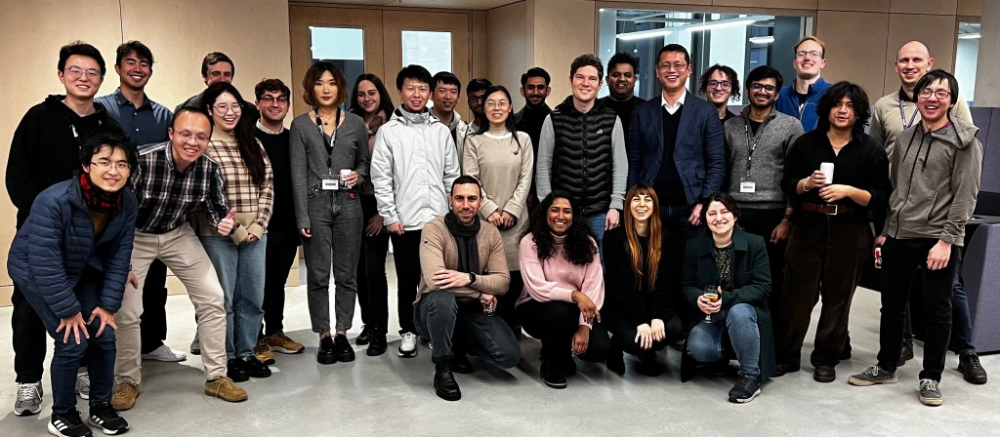
April 2023 RoboSoft Conference (Singapore)
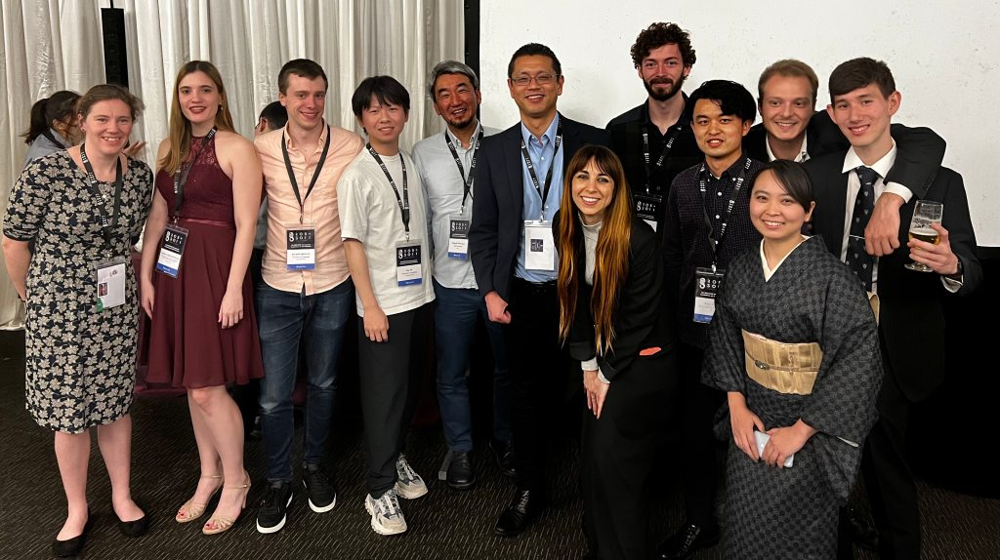
February 2023 Understanding Intelligence Workshop (Cambridge)
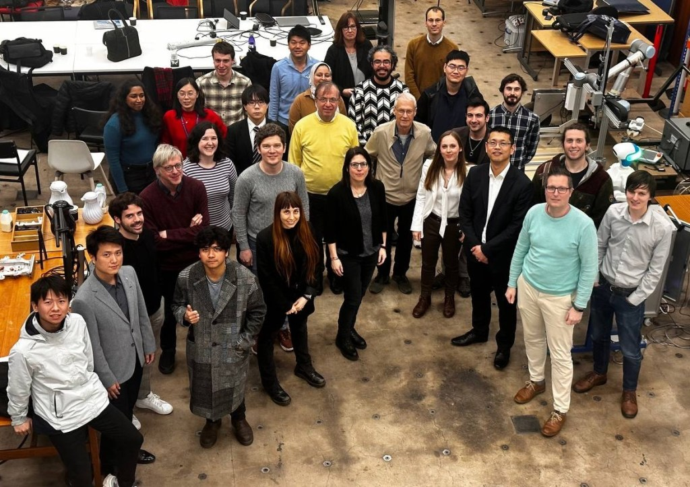
June 2022 Graduation Pub (Cambridge)
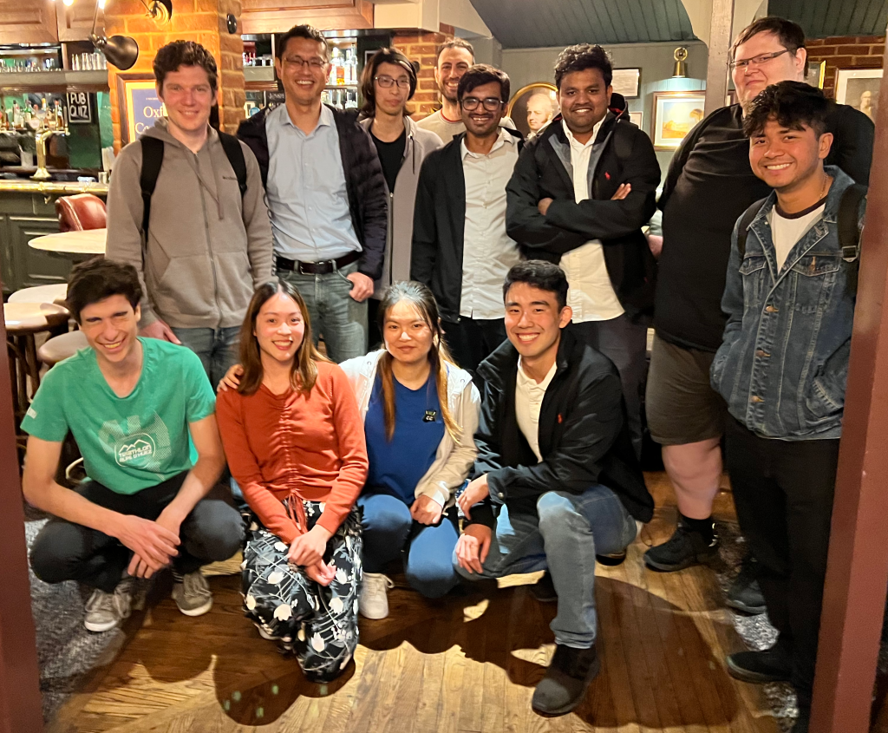
April 2022 RoboSoft Conference (Edinburgh)
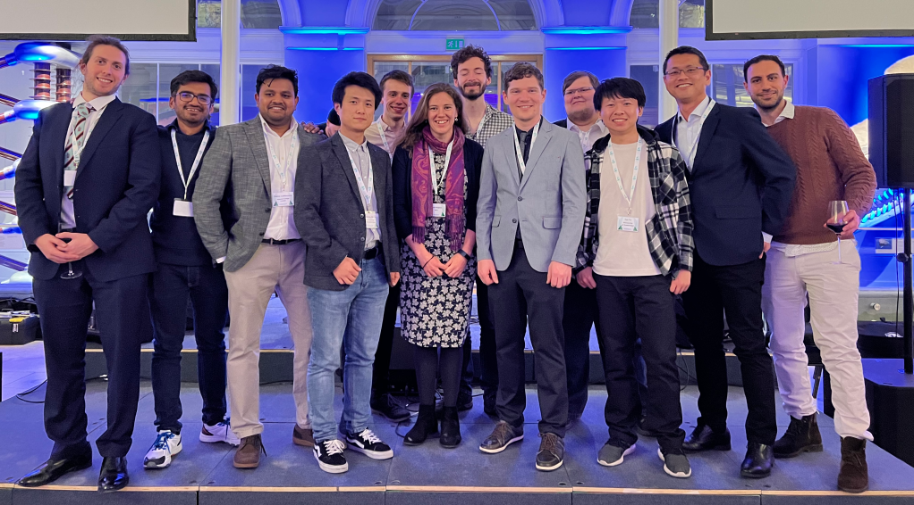
December 2021 SMART Winter School (Cambridge)
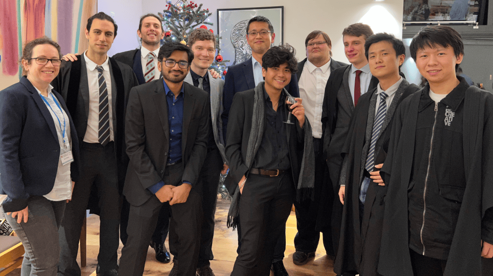
June 2021 Graduation Pub (Cambridge)
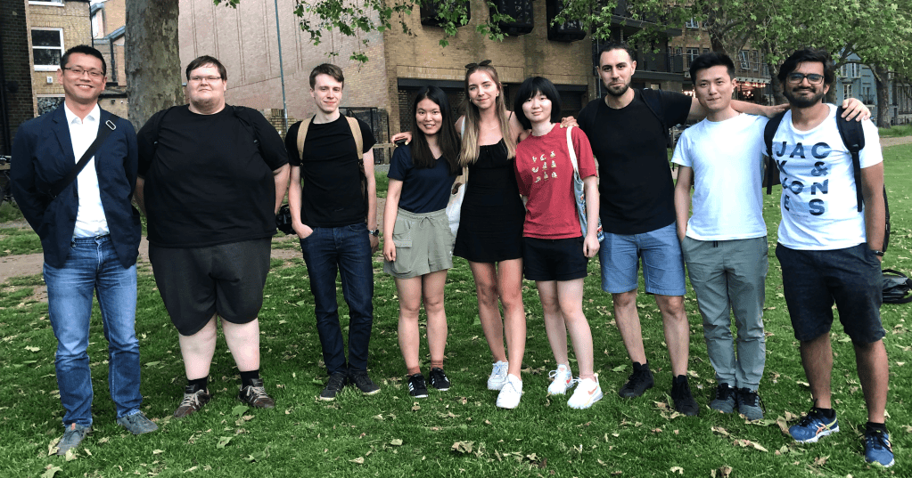
June 2020/Graduation and Re-union Remote Conference
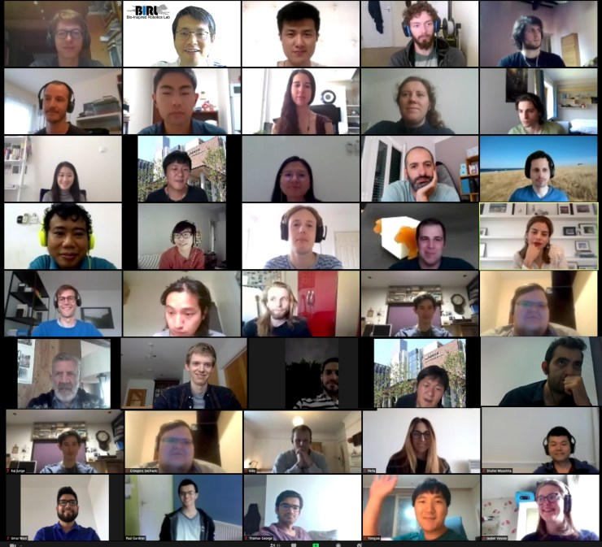
June 2018/Graduation: (left to right) Fumiya, Ioana, Daniel, Peter, Ayato, Ed, Michael, Kieran, Julia, Simon, Toby and Luca
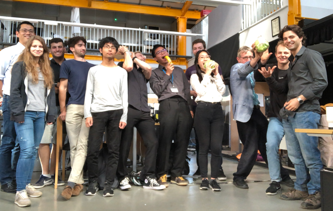
2018/Farewell: (left to right) Toby, Ayato, Fumiya, Perla, Luca and Josie
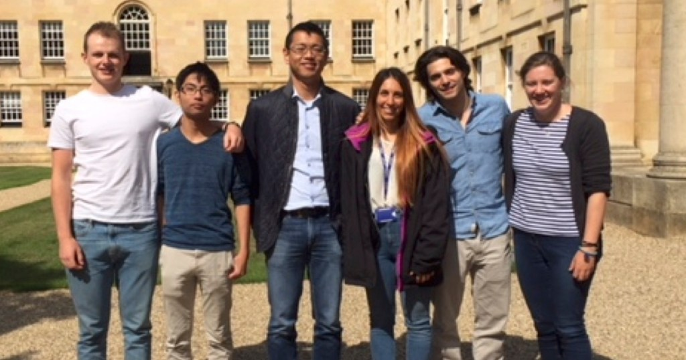
December 2015/Christ’s College, Cambridge: (left to right) Utku, Fumiya,Mariya, Fabio, Sarah, Fabian, Josie and Jia
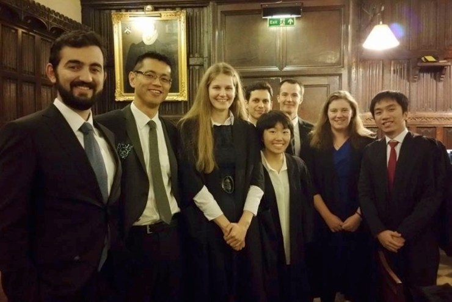
September 2014/Farewell Party ETH Zurich
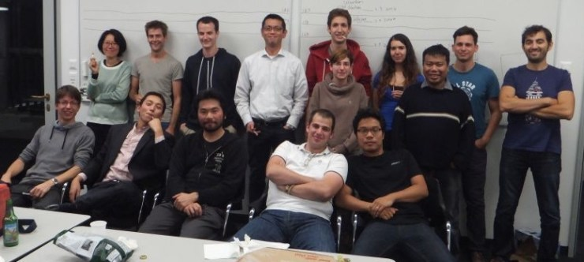
2012/Group Photo
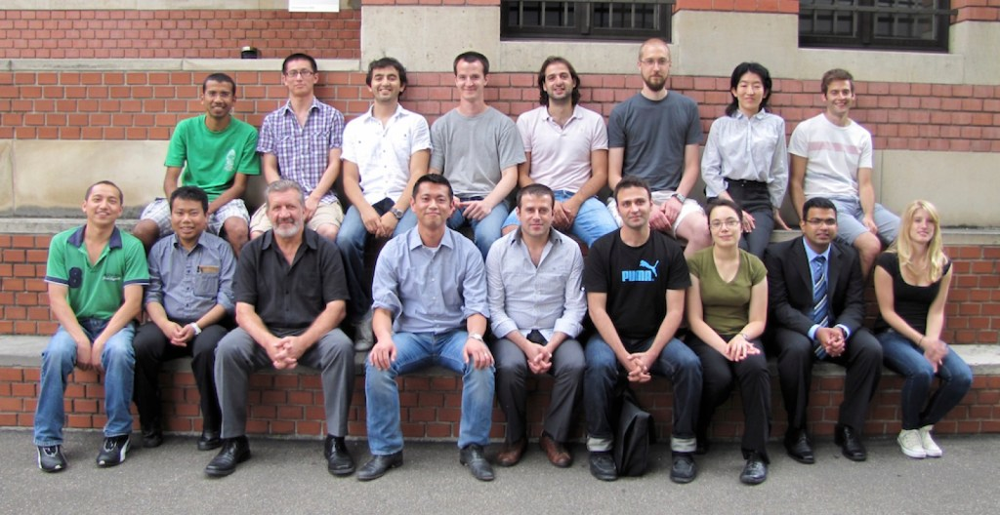
Tamara, Luzius, Rohit, Farhan, Keith, Hugo, Fumiya, Derek, Liyu and Nandan
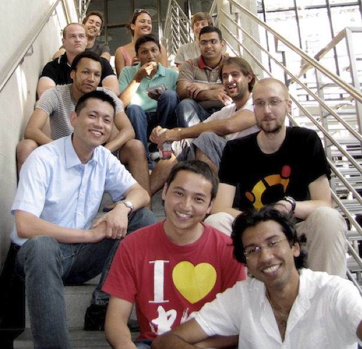
October 2009/ETH Zurich: Keith Gunura, Fumiya Iida, Liyu Wang and Nandan Maheshwari
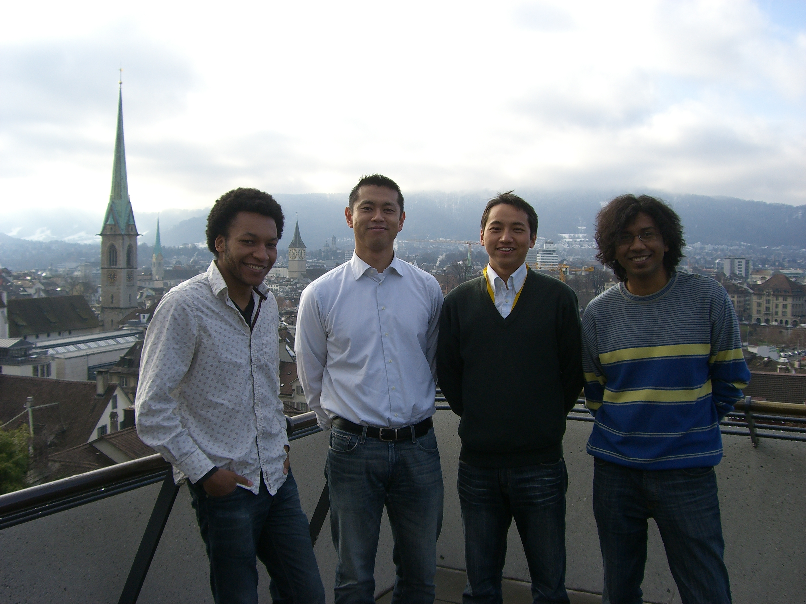